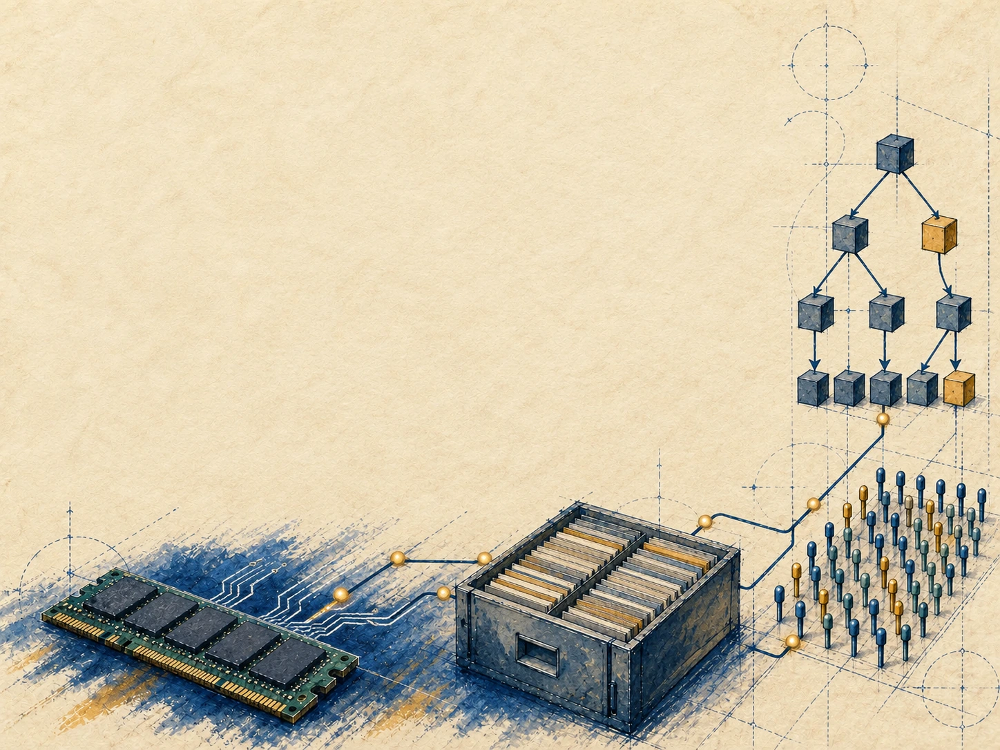

布局与执行
核对 530，区分布局与执行

优化数据访问，保持查询与事务结果正确
 VER. 2608
Built with impress.js
VER. 2608
Built with impress.js
布局、执行与恢复优化，都以查询和事务结果正确为前提
本节独立算例：金额＝单价×数量×（1－扣减比例），与 16.1 实付表分开
| 行 ID | 单价元 | 数量 | 扣减比例 | 计算金额元 |
|---|---|---|---|---|
| A1 | 100 | 2 | 0.10 | 180 |
| A2 | 50 | 3 | 0.20 | 120 |
| A3 | 80 | 1 | 0 | 80 |
| A4 | 40 | 5 | 0.25 | 150 |
合计 530 元；教材公式中的 Tax 在此指扣减比例，本例不表示通用含税价公式
列存按相同位置组合各属性；排序、删除和更新须保持行关联
01
02
03
04
05
06行A1: (100, 2, 0.10)
行A2: ( 50, 3, 0.20)
Price: [100, 50, 80, 40]
Qty: [ 2, 3, 1, 5]
Rate: [0.10, 0.20, 0, 0.25]A2 取各列第 2 项：50、3、0.20，金额 120；独立重排各列会破坏行关联
本例每组最多 2 行，组内按列存储，新增记录可分配到新组
| 行组 | Price 列 | Qty 列 | Rate 列 |
|---|---|---|---|
| G0：A1、A2 | 100、50 | 2、3 | 0.10、0.20 |
| G1：A3、A4 | 80、40 | 1、5 | 0、0.25 |
| 追加 G2：A5 | 20 | 2 | 0.10 |
追加 A5 金额 36，新合计 566；后续重置为原四行 530。按组分配内存，可减少单个大数组的扩容
同一表达式按逐行、整列或分批执行，合计均为 530
| 执行方式 | 过程与中间值 | 最终合计 |
|---|---|---|
| 逐行 | 逐条算出 180、120、80、150 | 530 |
| 整列 | 先得 200、150、80、200；再扣减 | 530 |
| 分批，每批 2 行 | 第一批 180+120；第二批 80+150 | 300+230=530 |
逐行重复迭代、属性访问和表达式派发；SQL 在执行前解析
独立估算：100 万行保留两个中间数组，每值 8 B；分批执行可复用数组
| 方式 | 中间值数量 | 工作区大小 |
|---|---|---|
| 一次处理整列 | 100 万×2 | 16 MB |
| 每批 1024 行并复用数组 | 1024×2 | 16 KiB |
仅计两个中间数组；输入、输出、连接表另算。能否留在 Cache 取决于总工作集，阻塞算子可能保留额外状态
独立耗时模型：解释执行 3 ms/次，编译 20 ms 后执行 1 ms/次
| 执行次数 | 解释总耗时 | 编译路径总耗时 |
|---|---|---|
| 1 次 | 3 ms | 21 ms |
| 10 次 | 30 ms | 30 ms |
| 20 次 | 60 ms | 40 ms |
本例复用编译结果超过 10 次获益；JIT 可结合向量化，行列布局另选
简化节点组：同一父节点的 4 个子节点连续，每节点 64 B，首地址 4096
| 子节点编号 | 键范围 | 地址 |
|---|---|---|
| 0 | k<20 | 4096 |
| 1 | 20≤k<40 | 4160 |
| 2 | 40≤k<60 | 4224 |
| 3 | k≥60 | 4288 |
查 45 走编号 2：4096＋2×64＝4224；本组由同一父节点的子节点组成
本例指针 8 B，仅比较 4 个子指针与 1 个首指针的空间
| 组织 | 父节点中的子地址 | 指针字节 |
|---|---|---|
| 逐个子指针 | 4096、4160、4224、4288 | 32 B |
| 节点组首指针 | 4096，其余由偏移计算 | 8 B |
分裂、扩容须维护连续组；本例省 24 B（未计元数据），256 B 节点组占 4 条 64 B 缓存行
独立例：R、S 均含键和字母；整数键作为哈希值，按最低二进制位分区
| 分区 | R 记录 | S 记录 |
|---|---|---|
| 偶数区 0 | (2,B)、(4,D) | (2,x)、(4,z)、(4,w) |
| 奇数区 1 | (1,A)、(3,C) | (3,y) |
区内连接：(2,B,x)、(3,C,y)、(4,D,z)、(4,D,w)，共 4 行，键 4 保留两次匹配
独立空间模型：R 每条哈希项 16 B，可用 Cache 预算 48 B，不计元数据
| R 键分布 | 最大分区哈希表 | 符合 48 B 预算？ |
|---|---|---|
| 未分区：1、2、3、4 | 4×16＝64 B | 否 |
| 最低一位分区 | 每区 2 条，32 B | 是 |
| 倾斜：1、3、5、7 全在奇数区 | 4×16＝64 B | 否 |
相等键须进入同一区；分区消耗搬移时间和空间，也可能改善地址转换缓存 TLB 的命中率
沿用连接例；两表局部排序后，以键 3 为共同边界重分布
| 节点范围 | 本地 R 键 | 本地 S 键 | 本地结果数 |
|---|---|---|---|
| 节点 0：k<3 | 1、2 | 2 | 1 |
| 节点 1：k≥3 | 3、4 | 3、4、4 | 3 |
重分布让匹配记录到达同一节点，合并共得 4 行；总成本包含重分布、边界协调与结果合并
独立库存例：P01 数量 1、版本 7；T1 与 T2 各想买 1 件
| 阶段 | T1 | T2 |
|---|---|---|
| 同时读取 | 数量 1，版本 7 | 数量 1，版本 7 |
| 各自计算 | 拟写数量 0 | 拟写数量 0 |
| 若都不检查就确认 | 购买成功 | 也购买成功 |
两笔交易确认成功，库存仅扣一次，造成超卖；短事务也可能发生这种冲突
每种方案都重新从数量 1、版本 7 开始
| 方案 | T1 先成功后 | T2 应怎样处理 |
|---|---|---|
| 先加排他锁再读库存 | 数量 0，提交后释放锁 | 获锁后读 0，不能继续卖 |
| 乐观读取与版本验证 | 验证 7 后写 0，版本变 8 | 版本 7 过期，重试后读 0 |
乐观验证与写入须在受保护的提交步骤内完成；两步之间若被其他事务插入更新，就可能丢失更新
本例 CAS 原子地比较并替换（版本，数量），状态与预期一致时写入新值
| 尝试 | 预期→新状态 | 结果 |
|---|---|---|
| T1 比较并交换 | (版本 7,数量 1)→(8,0) | 成功 |
| T2 使用旧预期再试 | (版本 7,数量 1)→(8,0) | 失败，重新判断 |
CAS 在此只覆盖这对状态；订单写入和扣库存需事务协调。无锁结构还涉及冲突重试、内存可见性与节点安全回收
查询版本、进程视图和重启起点分别服务于不同任务
| 机制 | 解决的问题 | 另需的机制 |
|---|---|---|
| 查询的一致快照 | 固定查询可见版本 | 持久保存与断电恢复 |
| 操作系统内存快照 | 提供某时点进程内存视图 | 数据库隔离协议 |
| 持久恢复检查点 | 重启的数据与进度起点 | 重放后续已提交日志 |
教材 HyPer 采用操作系统快照；数据库快照隔离另有写冲突协议，仍可能出现不可串行化调度
独立库存恢复例：检查点 100 保存 P01=16、P02=8，以下日志均已提交
| 日志序号 | 更新 | 允许的分工 |
|---|---|---|
| 101 | P01 设为 15 | 工作线程 A 先做 |
| 102 | P02 设为 7 | 工作线程 B 可独立做 |
| 103 | P01 设为 14 | 线程 A 须在 101 之后做 |
恢复结果为 P01=14、P02=7；P01 若按 103→101 重放，会错误变回 15
延续库存恢复例：P01 已完整恢复到 103，P02 尚未装载
| 请求 | 本例处理 |
|---|---|
| 只读 P01 且依赖已就绪 | 可按开放策略返回 14 |
| 统计 P01＋P02 总库存 | 等待 P02 恢复，返回 14＋7＝21 |
| 跨两分区的同一事务 | 全部依赖就绪后，完整发布 |
| 重建内存索引 | 从已恢复记录生成并验证键与位置 |
未恢复数据暂不可读；重建索引使用新进程记录位置，旧进程地址已失效
独立时间模型：三笔均进入本批，2 ms 开始日志刷写，5 ms 完成
| 事务 | 日志就绪 | 成功确认 | 等待 |
|---|---|---|---|
| T1 | 0 ms | 5 ms | 5 ms |
| T2 | 1 ms | 5 ms | 4 ms |
| T3 | 2 ms | 5 ms | 3 ms |
本例三份更新与提交信息持久保存后确认成功；合并刷写减少 I/O 次数，凑批增加等待时间
传统系统增加内存路径或独立设计 IMDB，均可结合 GPU 加速
| 路线 | 保留或重做什么 | 评估内容 |
|---|---|---|
| 传统系统加内存路径 | 保留接口，增加内存路径 | 同步、资源与恢复 |
| 独立 IMDB | 重设布局、索引与执行基础 | 功能、迁移与运维 |
| GPU 加速 | 批量算子交给 GPU | 传输、显存、失败回退 |
HTAP 还需协调事务与分析的可见性、资源分配和故障恢复
教学需求：每 1000 次请求有 950 次点查/更新、50 次大范围分析
| 检查对象 | 测试内容 |
|---|---|
| 正确性 | 四行表达式 530；重复键连接 4 行 |
| 事务负载 | 点查/更新延迟、冲突率与错误率 |
| 分析与设备 | 查询总耗时，包含传输和排队 |
| 改造与回退 | 接口兼容、数据校验、恢复与切回步骤 |
50 次长查询可能占用更多 CPU 或带宽；须用代表性负载测试候选方案
数据位置与执行设备共同决定传输量、排队和同步开销
| 路径 | 本例检查 |
|---|---|
| 存储→CPU | 所需列与版本是否已就绪，是否需解压 |
| CPU→GPU→CPU | 传入字段量、结果量、批次与排队 |
| 节点→节点 | 连接重分布量、同步与故障重试 |
| DRAM→持久介质 | 哪些日志已可靠保存，何时可确认 |
设备分工需同时验证传输成本、版本可见性、同步和恢复协议
沿用 16.2 订单例检验提交可见性，与本节 530 元算例分开
| 问题 | 检查结果或方法 |
|---|---|
| O103 何时进分析？ | 101 两行完整发布后，总额 14000→18000 |
| 长查询读哪个版本？ | Q1 固定快照 100，即使结束时 101 已发布 |
| 分析是否拖慢事务？ | 比较相同负载下的 P95、错误率与分析时间 |
| 崩溃后能否继续？ | 恢复数据与提交进度，重建必要索引和副本 |
完整发布两行更新，查询固定快照；用 P95 等指标评估资源隔离效果
本节用金额、连接和库存结果核对布局、执行与恢复方案
核对 530，区分布局与执行
计算节点地址，保留全部连接匹配
库存只卖一件，日志按依赖重放
比较迁移成本、同步与故障回退
下一节：多方共享账本的记录确认与故障恢复